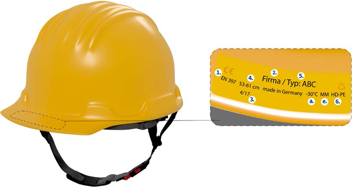

Nach § 2 PSA-Benutzungsverordnung darf nur solcher Kopfschutz als persönliche Schutzausrüstung (PSA) ausgewählt, bereitgestellt und benutzt werden, der den Bedingungen für das Inverkehrbringen von persönlichen Schutzausrüstungen entspricht.
Diese Bedingungen sind in der europäischen PSA-Verordnung festgelegt.
Hiernach werden drei Kategorien von Risiken unterschieden, vor denen persönliche Schutzausrüstungen Schutz bieten sollen:
Kopfschutz wird überwiegend in die Kategorie II eingestuft. Schutzhelme mit der optionalen Schutzfunktion gegen hohe Temperaturen (+150°C) oder Schutzhelme und Anstoßkappen mit elektrisch isolierenden Eigenschaften fallen in die Kategorie III.
Zum Konformitätsbewertungsverfahren von Kopfschutz nach Kategorie II gehört eine EU-Baumusterprüfung, die im Rahmen des Baumusterprüfverfahrens von einer Prüfstelle durchgeführt wird. Erst nach erfolgreich abgeschlossenem EU-Baumusterprüfverfahren stellt eine zugelassene (notifizierte) Prüfstelle die EU-Baumusterprüfbescheinigung aus. Diese Bescheinigung bestätigt, dass das geprüfte Baumuster den grundlegenden Anforderungen der PSA-Verordnung entspricht (Zertifizierung).
Kopfschutz der Kategorie III unterliegt zusätzlich einer Fertigungskontrolle gemäß PSA-Verordnung.
Die Hersteller haben dafür zu sorgen, dass die EU-Konformitätserklärung für das jeweilige Produkt verfügbar ist. Sie muss entweder dem Produkt beiliegen oder im Internet verfügbar sein.Es darf nur Kopfschutz bereitgestellt und verwendet werden, der mit einer CE-Kennzeichnung versehen ist.
Kopfschutz muss so gekennzeichnet sein, dass die nach der jeweiligen Norm geforderten Angaben deutlich sichtbar angebracht werden und während der Lebensdauer des Kopfschutzes lesbar bleiben. Diese dauerhafte Kennzeichnung kann beispielsweise in Form einer geprägten, einer gegossenen oder einer unverlierbar angebrachten Kennzeichnung erfolgen. Die aufgrund der jeweilig umgesetzten Norm erforderlichen Zusatzinformationen sind in Form eines Etiketts beziehungsweise eines Schildes anzubringen.
Die Kennzeichnungen der verbindlichen und der optionalen Anforderungen sind in der folgenden Tabelle zusammengestellt. Bergsteigerhelme und Fahrradhelme verfügen über keine Zusatzoptionen und werden daher nicht mit aufgeführt.
Tabelle 1 Kennzeichnung ausgewählter Arten von Kopfschutz.
| Kennzeichnung | Kopfschutz | |||
| Industrieschutzhelm | Hochleistungs-Industrieschutzhelm | Elektrisch isolierender Helm | Industrie-Anstoßkappe | |
| Verbindliche Kennzeichnung | ||||
| Nummer der europäischen Norm | EN 397 | EN 14052 | EN 50365:2002-11 | EN 812 |
| Name oder Zeichen des Herstellers | X | X | X | X |
| Herstellungsdatum | X | X | X | X |
| Typ- oder Modellbezeichnung des Herstellers | X | X | X | X |
| Größe oder Größenbereich | X | X | X | X |
| Helmgewicht | – | auf 50 g gerundet | – | – |
| Werkstoff der Helmschale | X | X | X | – |
| Zusatzinformationen nach Norm (Etikett od. Schild) | X | X | X | X |
| Kennzeichnung optionaler Anforderungen | ||||
| Sehr niedrige Temperatur | X | X | X | X |
| Sehr hohe Temperatur (+150 °C) | X | X | X | – |
| Elektrische Isolierung | X | X | X | X |
| Metallspritzer | X | X | X | – |
| Widerstandsfähigkeit gegen Strahlungswärme | – | X | – | – |
| Flammenbeständigkeit1 | – | – | – | X |
| Seitliche Verformung | X | – | X | – |

Abb. 1 Kennzeichnung gemäß DIN EN 397:2013-04
Kennzeichnung mit den allgemeinen Angaben
1. Europäische Norm
2. Name oder Zeichen des Herstellers
3. Herstellungsdatum
4. Größenbereich in cm (Kopfumfang)
5. Helmtyp (Herstellerbezeichnung)
6. Helmschalenmaterial nach DIN EN ISO 472
(aus Abb. 1: HD-PE – Abkürzung für "High Density-Polyethylen")
Kennzeichnung von erfüllten Zusatzanforderungen
a. Sehr niedrige Temperaturen: -20 °C oder -30 °C
b. Sehr hohe Temperaturen: +150 °C
c. Elektrische Isolierung: 440 V Wechselspannung
d. Seitliche Verformung: LD
e. Metallspritzer: MM
Die Zusatzanforderungen "Sehr hohe Temperaturen (+150 °C)" und "Elektrische Isolierung (440 V Wechselspannung)" schützen vor tödlichen Gefahren und irreversiblen Verletzungen und fallen daher in die Kategorie III der PSA-Verordnung. Bei Helmen dieser Kategorie ist neben der CE-Kennzeichnung die vierstellige Kennnummer der notifizierten Stelle erforderlich.
Die unterschiedlichen Normen für Schutzhelme sehen zusätzliche Informationen vor.
Im Falle des Industrieschutzhelms muss gemäß entsprechender Norm ein Etikett am Helm angebracht werden, das folgende Zusatzinformationen in der Sprache des Verkaufslandes enthält:
Die Hersteller müssen dem Kopfschutz eine Anleitung beifügen, die zweckdienliche Angaben über die Benutzung, Lagerung, Überprüfung, Wartung, Reinigung, Desinfizierung, Kennzeichnung und über die Lebens- bzw. Gebrauchsdauer des Kopfschutzes bereitstellt. Weitere Informationen, wie beispielsweise über Zubehör, das an der PSA angebracht werden darf, müssen ebenfalls in der Anleitung enthalten sein.
| 1 | Die Flammenbeständigkeit ist bei den Schutzhelmen eine nicht zu kennzeichnende Grundanforderung. Bei den Anstoßkappen erfolgt die Kennzeichnung mit einem "F". |